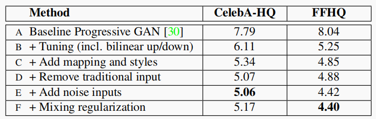
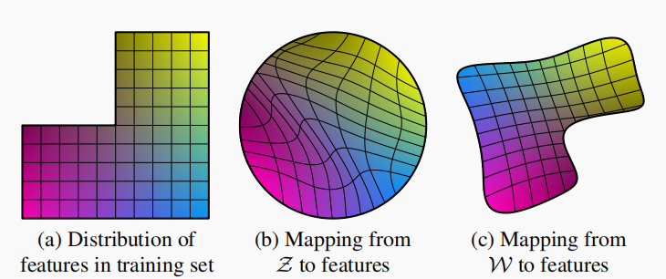
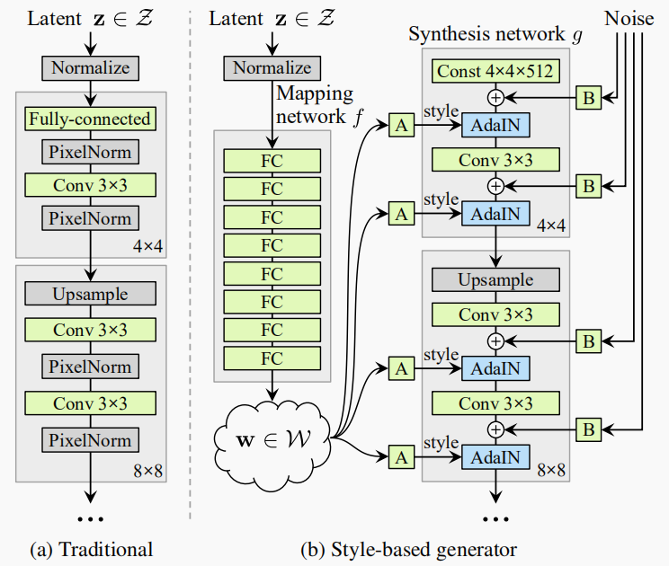
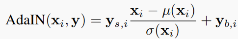
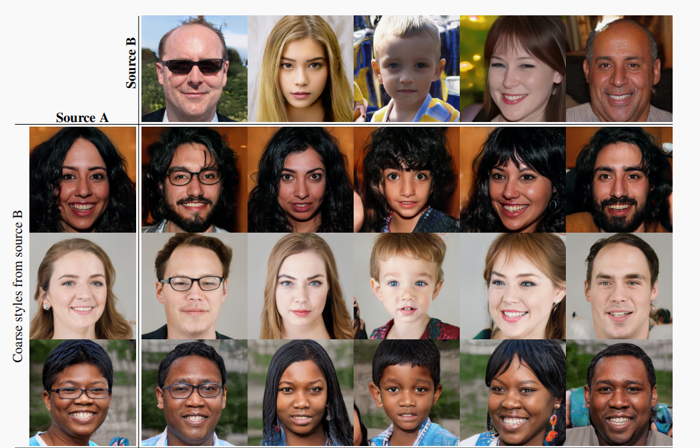

StyleGAN
\(PGGAN\)的效果已经很好了，可是研究人员并不满足，因为它有一个大问题就是特征纠缠。两个\(latent~code\)差别可能很小（体现在欧式距离上），但是生成的图片却千差万别。特征纠缠对\(PGGAN\)的应用造成了很大的阻碍，而\(StyleGAN\)就是来解决特征纠缠问题的！
这一部分顺着这张表，来整理一下\(PGGAN\)是如何进化成为\(StyleGAN\)的。表中的数据是\(FID\)距离，越小代表生成结果越好，衡量角度为图片质量与多样性。


假设上图中，横轴从右到左代表性别从男过度到女，纵轴从下到上代表头发从短到长，一个合理的事实是，训练集中有很多短发的男人，长发的女人与短发的女人，却没有长发的男人，但是在\(Z\)空间中，四者出现的概率均等。这显然是不合理的，会影响生成图片质量，因此引入\(MLP\)映射到\(W\)空间是为了让\(latent~code\)的分布更贴合数据集。关于怎么将其注入生成器，下面的部分再解释。以上的这些改进，有一些并没有说清楚，例如：\(W\)空间的\(latent~code\)是如何注入\(StyleGAN\)的？\(StyleGAN\)生成器的输入是什么？如何对生成器的每一个网络层注入随机误差？混合正则化策略是什么？下面逐一解释清楚。

上图左侧\(a.Traditional\)就是我们熟知的\(PGGAN\)生成器，而右侧就是宏观上\(StyleGAN\)生成器的整个结构了。可以看到，\(StyleGAN\)生成器分为一个映射网络\(f\)与一个合成网络\(g\)。
合成网络\(g\)是逐级提升图片分辨率。从\(4*4\)到\(1024*1024\)，一共9种分辨率，每种分辨率使用2个卷积块，这就解释了为什么需要注入18次\(style\)。关于随机噪声，是从高斯分布中产生一张单通道的噪声图，利用广播机制，直接与各分辨率的特征图做\(Pixelwise\)的加法。如果\(style\)由映射网络\(f\)产生，那么这个\([18,512]\)的张量在每一维度上都必然是相等的，因为它是靠复制出来的。实际上，\(f\)与\(g\)是可以分开的。我可以单独生成一个没必要每个维度都相等的\([18,512]\)维张量，直接当作\(style\)注入合成网络\(g\)，这样也是可以得到一张生成图片的。再进一步，使用两个\(Z\)空间的随机张量，生成出两个\(W\)空间的\(style\)，将其融合，就可以得到融合的人脸了。下图展示了这样融合的结果：

训练时的混合正则化策略就是延续这个思路的。在训练时，通过\(W\)空间的\(style\)混合一些图片，可以使得模型具有更强的泛化能力。